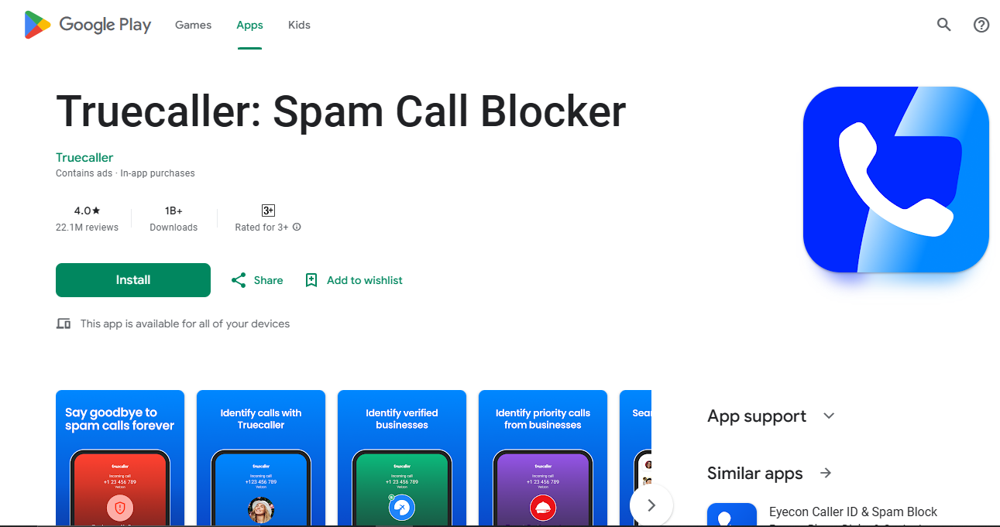

Mobile Apps:
1-Truecaller:
- Available for both iOS and Android.
- Identifies caller information and provides location details if available.
2-GPS Phone Tracker:
- Allows you to track a phone's location.
- Requires consent from the person being tracked.
3-Family Locator by Life360:
- Designed for family tracking.
- Requires mutual consent and app installation on all devices.
4-Find My Device (Google):


- Helps locate lost Android devices.
- Requires the device to be linked to a Google account and location services enabled.
- Go to settings or google account.
- Search option find my device and enabled it if it already enabled then it will show the phone information.
5-Find My iPhone (Apple):


- Helps locate lost iOS devices.
- Requires the device to be linked to an Apple ID and Find My iPhone enabled.